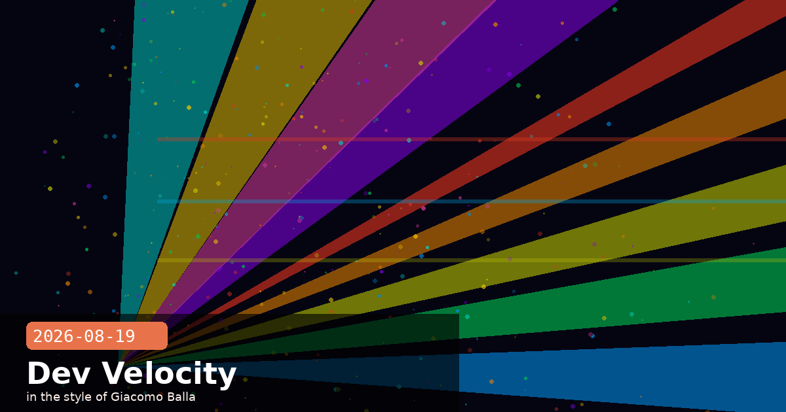

Hooks, Cache-Aware Prompting, and Parallel Subagent Design

💡 Claude Code Hooks: Four Event Types That Transform Your Workflow
Claude Code's settings.json supports a hooks system that fires arbitrary shell commands in response to four lifecycle events: PreToolUse, PostToolUse, Stop, and Notification. Most developers have not configured these yet — and are missing the highest-leverage customisation in the entire tool.
The four events
PreToolUse — runs before Claude executes any tool call. The hook receives the tool name and input as JSON on stdin. Exit code 2 blocks the tool call and returns the hook's stdout to Claude as an error; exit code 0 allows it through.
PostToolUse — runs after a tool call returns, receiving both the input and the output. Use this to trigger side effects (formatting, linting, logging) that should happen every time a specific tool fires.
Stop — fires when Claude finishes a complete response turn. Useful for notifications, summaries, or triggering downstream automation.
Notification — fires when Claude Code emits a notification (e.g. "waiting for permission"). Lets you relay alerts to a phone or Slack channel without polling.
Three patterns worth stealing immediately
Pattern 1 — Block dangerous shell commands before they run:
The Python script reads sys.stdin for the JSON input, checks the command field against a denylist (e.g. rm -rf /, git push --force), and exits 2 with an explanation if matched. Claude receives the explanation as a tool error and adjusts its approach.
An empty matcher matches every Stop event. Pair with ntfy.sh (free, self-hostable) for cross-device push notifications. You can step away from your machine and get pinged the moment Claude wraps up.
Hook exit codes matter
Exit 0 = success, Claude continues. Exit 2 = block the tool and surface the hook's stdout as an error to Claude. Any other exit code = hook failure, logged but not surfaced to Claude. The exit-2 behaviour is the interesting one — it lets you build a conversational veto layer: Claude tries a command, your hook rejects it with a reason, Claude reads the reason and revises its plan.
Claude Codehooksautomationsettings.jsondeveloper productivity
💡 Prompt Caching with Tool Results: The 90% Cost Cut Most Pipelines Miss
Anthropic's prompt caching saves up to 90% on input token costs for repeated content — but most teams apply it only to system prompts and miss the larger opportunity: caching tool results. In an agentic loop that reads the same file or document repeatedly across turns, caching the tool result on the first read can eliminate thousands of dollars per day at scale.
How to cache a tool result
Add "cache_control": {"type": "ephemeral"} to any content block in the messages array, including tool result blocks:
On the next API call that sends the same tool result (same content, same position in the array), Anthropic's infrastructure recognises the cache hit and charges write-cache price (10% of standard) instead of input price.
Four rules for maximum cache utilisation
Put stable content before dynamic content. Cache checkpoints are evaluated left-to-right in the messages array. If you insert dynamic content early (e.g. a timestamp), it breaks the cache for everything that follows.
Mark your system prompt. Place cache_control on the last block of your system prompt. This is almost always a win for any non-trivial system prompt.
Sequence calls within 5 minutes. Ephemeral cache TTL is 5 minutes. For long-running pipelines that go idle between steps, consider how to batch calls within that window.
Cache retrieved context, not LLM outputs. Cache tool_result blocks containing fetched content (files, database rows, search results) — not the assistant's previous responses, which are usually unique each turn.
The nuance most documentation skips
Cache hits are only charged at write-cache price on the second and subsequent reads. The first call that populates the cache is charged at write-cache price (25% of standard for Sonnet 5). So the economics are: first call costs 25% extra vs standard, every subsequent call within 5 minutes costs ~90% less. The break-even is two calls. If a tool result will be referenced more than once in your loop — a near-certainty for any document-grounded agent — cache it.
💡 Designing Tasks for Subagent Forking (Now On by Default)
Since Claude Code v2.1.232 shipped on August 14, subagent forking is on by default for all users. When Claude identifies independent subtasks in its plan, it can now spawn parallel subagents automatically — each with its own context window, tool access, and working scope. This changes how you should write instructions.
What Claude looks for when deciding to fork
Claude forks subagents when it detects tasks that satisfy three conditions simultaneously:
The tasks produce outputs that do not depend on each other's intermediate state
Each task has a well-defined completion signal (a file written, a test passing, a result returned)
The combined token cost of the parent keeping all context exceeds the overhead of spawning children
In practice: "Refactor these three modules" → likely to fork. "Refactor this module, then write tests for what you changed" → sequential, no fork. The key is data dependency.
Five patterns for fork-friendly instructions
1. Name the independence explicitly. Don't rely on Claude to infer it. Say: "These three tasks are completely independent of each other and can run in parallel." This suppresses ambiguity and speeds up the forking decision.
2. Give each subtask a distinct workspace. If subagents might write to the same directory, separate them: "Subagent A works in src/auth/, Subagent B works in src/billing/". Collisions in shared directories are the most common source of forked-agent bugs.
3. Inject peer awareness when agents share state. If agents must read a shared file (e.g. a config or schema), say so and tell each agent to treat it as read-only unless explicitly authorised to write. Claude Code's fork model does not automatically impose file-level locks.
4. Cap concurrency with --max-subagents. The default is determined by your plan tier. For cost-sensitive pipelines, set it explicitly:
claude --max-subagents 4 "Analyse all 24 log files in ./logs/ and produce a summary per file"
Without this flag, Claude may spawn one subagent per log file on a large directory — impressive, but potentially expensive.
5. Read subagent outputs explicitly before synthesis. In multi-stage pipelines, add a final instruction: "After all subagents complete, read each of their output files and synthesise a combined report." Claude will not automatically merge parallel outputs without an instruction to do so.
Cross-session @-mention is the missing link for long projects
Also introduced in v2.1.232: subagents can now be @-mentioned across sessions using their session ID. If a subagent is doing a long background task (e.g. a test suite that runs for 20 minutes), you can start a new Claude Code session, @-mention the running subagent, and ask for a status update — without interrupting it. This makes long-horizon agentic work significantly more manageable for teams doing overnight runs or CI-integrated tasks.